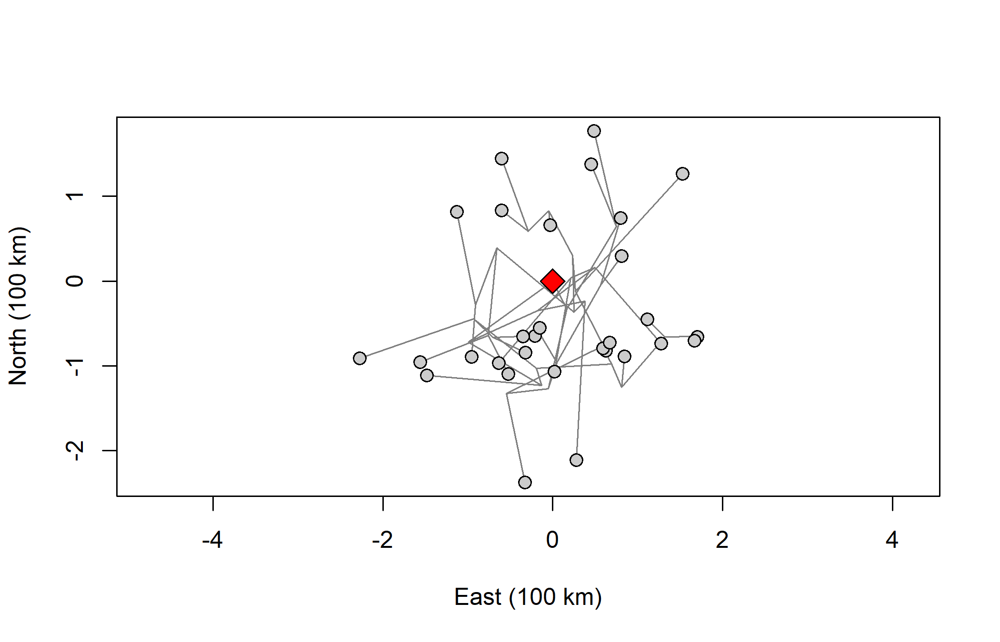
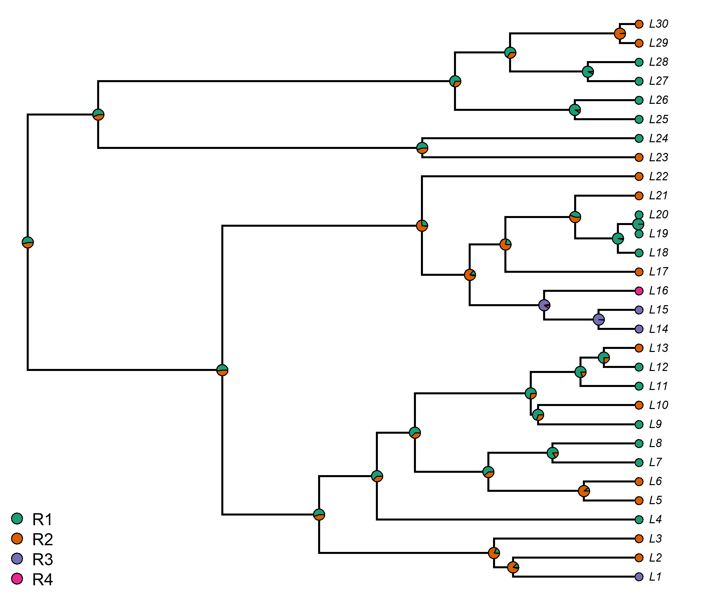
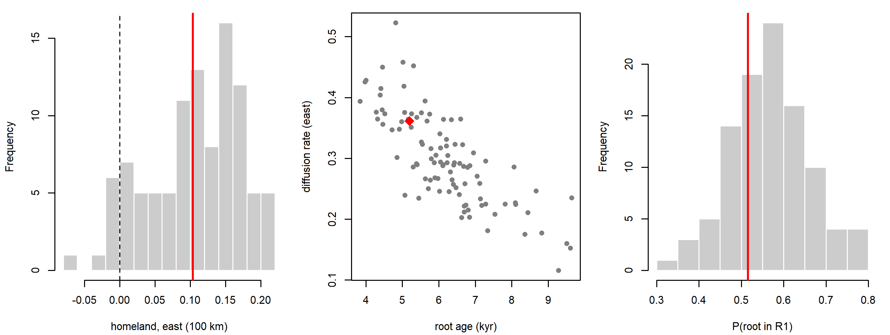

Chapter 11 Phylogeography and Homelands
Where was Proto-Indo-European spoken? Did the ancestors of the Bantu languages cut straight through the Central African rainforest, or skirt around it? Where did the Pama-Nyungan languages, which today cover most of Australia, begin? Questions about homelands (in the German tradition, the Urheimat) and routes of dispersal are among the oldest in historical linguistics and among the most consequential for prehistory, because they connect language families to archaeological cultures, to the spread of farming and to population movements visible in ancient DNA. Phylogeography, the joint modeling of genealogy and geography, turns these questions into statistical inference: the location of each language is treated as a character that evolves along the branches of a dated tree. This chapter asks what such models can establish, and what they cannot. A posterior distribution over the location of a proto-language is easy to obtain; showing that the assumed process of movement describes how speech communities actually spread is much harder.
After reading this chapter you should be able to:
- explain the classical homeland arguments (linguistic paleontology, the diversity principle, migration theory) and why the Brownian homeland estimate is a phylogenetically weighted average of present-day locations;
- specify a discrete phylogeographic model (a rate matrix on regions, with BSSVS or a GLM) and a continuous one (Brownian motion or a relaxed random walk), and say what each parameter means;
- show by simulation why undirected diffusion models cannot detect a directional expansion from contemporaneous languages, and how ancient languages restore identifiability;
- distinguish parameter recovery, robustness under misspecification and empirical model adequacy in phylogeography, and carry out a simple adequacy check;
- interpret reconstructed locations and diffusion rates as statements about language lineages under a model, and judge which parameters can be read as historical quantities;
- carry a sample of trees through a phylogeographic analysis and explain why a single maximum clade credibility tree can mislead.
11.1 The homeland question
A language family is a set of languages descended from a single ancestor, the proto-language. That proto-language was once spoken by a real community, at a real time, in a real place. Locating that place is not idle curiosity. If Proto-Indo-European was spoken in Anatolia around nine thousand years ago, the family’s spread is plausibly linked to the spread of farming into Europe, as argued by Renfrew (1987). If it was spoken on the Pontic-Caspian steppe some six thousand years ago, the spread is plausibly linked to the mobile pastoralist cultures associated with horse riding and wheeled vehicles, as argued in different ways by Mallory (1989) and Anthony (2007). Each scenario makes different predictions about the archaeological record, about population genetics and about the vocabulary we should be able to reconstruct. The same is true for every large family: the location of the Proto-Austronesian homeland (Taiwan, on most accounts) anchors the story of the settlement of the Pacific; the location of the Bantu homeland (the Grassfields region on the border of present-day Nigeria and Cameroon, on most accounts) anchors the story of the spread of farming across sub-Saharan Africa.
Historical linguists developed three classic families of argument for homelands before phylogenetic methods existed.
Linguistic paleontology. If a word for ‘beech’, ‘salmon’, ‘snow’ or ‘wheel’ can be reconstructed for the proto-language, then its speakers presumably knew the referent, and the homeland must lie in a region and period where the referent existed. Linguistic paleontology has a long and contentious history in Indo-European studies, where the reconstructed vocabulary for wheeled vehicles (‘wheel’, ‘axle’, ‘shaft’, ‘to convey in a vehicle’) has been used to argue that Proto-Indo-European cannot predate the invention of the wheel in the fourth millennium BCE (Anthony 2007). The argument’s weakness is semantic drift and parallel borrowing: words can change meaning, and words for new technologies can spread among already-separated languages, so that a “reconstructible” word may in fact be a wanderwort that diffused after the breakup.
The diversity or “center of gravity” principle. The region in which a family shows its greatest genealogical diversity (the most first-order branches, or the deepest splits, packed into the smallest area) is likely to be the homeland, because that is where the family has been in place longest. Sapir (1916) articulated the principle for North American families, and Dyen (1956) formalized it as a migration theory that seeks the homeland requiring the fewest migrations to explain the present distribution of subgroups. On this argument, the concentration of the primary branches of Austronesian on Taiwan, and of the deepest branches of Bantu in the northwest of the Bantu area, points to those regions as homelands.
Geographical typology. Nichols (1992) contrasted spread zones, regions in which one family repeatedly expands and replaces others, leaving low genealogical diversity (the Eurasian steppe is her central example), with residual zones, mountainous or peripheral regions where diversity accumulates (the Caucasus is the classic case). Spread zones complicate the diversity principle, because the area of greatest diversity may be a refuge rather than a point of origin (Nichols 1997).
All three approaches are informal, and none comes with a measure of uncertainty. Phylogeographic models offer an explicit probabilistic framework in which the tree, its branch lengths in time, the process by which locations change and the uncertainty in all of these are estimated together. As we will see, though, the most widely used phylogeographic models are formalizations of the diversity principle more than alternatives to it, and they inherit some of its weaknesses.
11.2 Diversity-based homeland methods
Before turning to explicit models of movement, it is worth looking more closely at quantitative versions of the diversity principle, because they are cheap, they are widely applied, and they provide a useful baseline against which to judge more elaborate models.
The idea has a parallel in the age-area hypothesis of early twentieth-century biogeography: the area where a group has lived longest is where it has had most time to diversify. In linguistics, Sapir (1916) reasoned that the region of greatest linguistic differentiation within a stock marks its historical center of gravity. Dyen (1956) turned this into a procedure. Given a classification and a map, consider each candidate homeland and count the number of migrations needed to bring every subgroup to its present location; the candidate requiring the fewest moves is preferred. The principle is essentially parsimony applied to geography, and it is a direct ancestor of the discrete parsimony reconstructions discussed below.
Wichmann, Müller, et al. (2010) proposed a fully quantitative version using lexical distances from the Automated Similarity Judgment Program (ASJP; Chapter 3). For each language in a family, they computed a diversity score that combines the lexical distances between that language and the other members of the family with the geographical distances between them, so that a language surrounded by many nearby but lexically divergent relatives receives a high score. The homeland is placed at the location of the language with the highest score. Applied to a large number of families, the method reproduces many homelands that specialists accept on other grounds, and its simplicity makes it a useful first look at families for which no phylogeographic analysis exists. That agreement should not be over-read as independent validation, however: many of the specialists’ homelands were themselves argued from the distribution of subgroups, that is, from the diversity principle applied to classifications built by the comparative method, so method and benchmark share much of their evidence. The method also makes its assumptions transparent: it will place the homeland wherever divergent languages are most tightly packed, and nowhere else.
At a much larger scale, Atkinson (2011) argued that phoneme inventory size decreases with distance from Africa, as a serial founder effect would predict, and that the point of origin that best explains the global distribution of inventory sizes lies in southern or central Africa. The analysis is a diversity-based homeland method applied to all languages at once, and it was sharply criticized on statistical and conceptual grounds (Cysouw et al. 2012): phoneme inventories are not neutral markers, they change too fast to preserve a signal across tens of millennia, and the statistical evidence depends on the choice of origin model and of data source. It illustrates both the attraction and the danger of diversity methods: they always return an answer, and nothing in the method itself tells us whether the answer reflects history.
Diversity methods share three weaknesses.
- Replacement and spread zones. If a family’s original core has been overrun by later expansions (of the family itself, or of another family), the zone of greatest surviving diversity may lie far from the homeland. Turkic, now spoken from Siberia to the Balkans, illustrates how later movements can obscure an earlier distribution.
- Sampling. Diversity scores depend on which languages are included. Well-documented regions with many described varieties will look more diverse than poorly documented ones, independently of history. The distinction between “language” and “dialect” (Chapter 15) directly changes the count.
- No model of time. Diversity is not converted into age, and a region with many shallowly divergent languages can outscore a region with a few deeply divergent ones.
The phylogenetic methods developed below tackle the third weakness head-on and give a principled handle on the second. The first, replacement, is a limit on what the surviving languages can tell us, and no model applied only to present-day languages can fully overcome it.
A useful mental model for the rest of this chapter: under the simplest continuous phylogeographic model (Brownian motion on a fixed tree), the estimated homeland is a weighted average of the present-day locations, with weights determined by the tree. Languages on long, isolated branches (for example, the sole survivor of a deep primary branch) receive more weight than languages in large, shallow clades, whose many members largely duplicate one another’s information. This is a formal version of the intuition behind the diversity principle, and it explains both why phylogeographic and diversity-based methods often agree and why both fail in the same way when a family has expanded steadily in one direction.
11.3 The phylogeographic framework
Phylogeography treats the location of each language as a character that evolves along the branches of the tree. When a lineage splits, both daughters begin at the location of their ancestor; along each branch the location changes according to a stochastic process; at the tips we observe the present (or attested) locations. Inference then asks which ancestral locations, and which parameters of the movement process, best explain the observed tip locations given the tree.
The term itself comes from biology, where Avise et al. (1987) coined “phylogeography” for the study of the geographic distribution of genealogical lineages within and among closely related species, originally using mitochondrial DNA. The model-based, Bayesian version used in linguistics descends more directly from viral phylodynamics, where the questions (where did an epidemic start, and how did it spread?) closely parallel the homeland question.
Formally, let \(D_L\) denote the linguistic data (for example a cognate matrix), \(D_G\) the geographical data (tip locations), \(\tau\) the tree with branch lengths in time, \(\theta_L\) the parameters of the lexical substitution and clock models, and \(\theta_G\) the parameters of the geographic process. If we assume that geography and vocabulary evolve independently given the tree, the joint posterior factorizes as \[\begin{equation} p(\tau, \theta_L, \theta_G \mid D_L, D_G) \propto p(D_L \mid \tau, \theta_L)\, p(D_G \mid \tau, \theta_G)\, p(\tau)\, p(\theta_L)\, p(\theta_G). \tag{11.1} \end{equation}\] The first factor is the familiar phylogenetic likelihood of Chapter 5, computed under a lexical model from Chapter 7; the second is the geographic likelihood, the topic of this chapter. In principle the geography also informs the tree, since a candidate tree that groups languages spoken thousands of kilometers apart will have a lower geographic likelihood. In practice the geographic data are a single character (or a pair of coordinates) against hundreds or thousands of lexical characters, so the tree is driven overwhelmingly by the lexicon.
Two analysis strategies are common. In joint analyses, as in Bouckaert et al. (2012), the tree, the dates and the geographic history are sampled together in a single Markov chain Monte Carlo (MCMC) run. In two-step or conditional analyses, a posterior sample of dated trees is first obtained from the lexical data, and then the geographic model is fitted on each tree in the sample, with the results averaged over trees. The second strategy is cheaper and makes it easy to compare many geographic models, at the cost of ignoring the (usually small) information that geography provides about the tree. Both approaches integrate over phylogenetic uncertainty. A third shortcut, fitting the geographic model to a single summary tree, does not, and Section 11.10 shows what it can hide.
The geographic factor \(p(D_G \mid \tau, \theta_G)\) depends on how location is represented. If we divide the map into \(K\) regions and code each language by its region, location is a discrete character and the models of Chapter 5 apply with little modification. If we record coordinates, location is a continuous character and we need a model of diffusion in the plane or on the sphere. We take these in turn.
11.4 Discrete phylogeography
11.4.1 Locations as states of a Markov chain
Suppose the region occupied by a family is divided into \(K\) areas: for Bantu, perhaps the Cameroon Grassfields, the western rainforest, the Great Lakes region and the southern savannahs. Each language is assigned to one area. We model the history of a lineage’s location as a continuous-time Markov chain with \(K\) states and an instantaneous rate matrix \(\mathbf{Q} = \{q_{ij}\}\), where \(q_{ij}\) for \(i \ne j\) is the rate at which a lineage currently in area \(i\) moves to area \(j\), and the diagonal elements are \(q_{ii} = -\sum_{j \ne i} q_{ij}\) so that rows sum to zero. Exactly as for nucleotides or cognate states, the probability that a lineage starting in area \(i\) is in area \(j\) after time \(t\) is the \((i,j)\) entry of \[\begin{equation} \mathbf{P}(t) = e^{\mathbf{Q}t}. \tag{11.2} \end{equation}\] The likelihood of the observed tip areas given the tree is computed by Felsenstein’s pruning algorithm (Chapter 5), exactly as for any other discrete character. The posterior probability that the root (the proto-language) was in area \(i\) is proportional to the prior probability of area \(i\) at the root times the likelihood of the tip areas given that the root was in \(i\). The same idea extended to internal nodes yields ancestral area probabilities for every proto-language in the tree (Chapter 12 treats ancestral state reconstruction in general).
The rate matrix can be parameterized with different degrees of freedom:
- Equal rates (ER): a single rate for all moves, one parameter.
- Symmetric (SYM): \(q_{ij} = q_{ji}\), giving \(K(K-1)/2\) parameters. This is the model introduced for viral phylogeography by Lemey et al. (2009).
- Asymmetric or all-rates-different (ARD): \(q_{ij} \ne q_{ji}\) in general, giving \(K(K-1)\) parameters. Asymmetric rates allow, for example, more movement out of a homeland than into it; an asymmetric extension of the BSSVS approach described below was introduced by Edwards et al. (2011).
- Constrained or adjacency models: rates between non-adjacent areas fixed at zero, so that lineages must move through intermediate areas. This is the simplest form of landscape awareness.
The number of parameters grows quadratically with \(K\), while the data are a single character with one observation per language. With ten areas an asymmetric model has ninety rates to be estimated from, perhaps, a hundred tip states. The parameters are therefore weakly identified, and the prior matters a great deal. This motivates BSSVS.
A word on parsimony. Before likelihood models were available, ancestral areas were reconstructed by Fitch parsimony (Chapter 4), which finds the assignment of areas to internal nodes requiring the fewest moves. This is Dyen’s migration theory in algorithmic form. Gray and Jordan (2000) used parsimony mapping of this sort, among other analyses, to examine whether Austronesian subgroups were arranged on the tree in the sequence predicted by a Taiwan-to-Pacific “express train”. Parsimony ignores branch lengths, so it cannot tell a move that happened on a long branch (unsurprising) from one on a short branch (surprising), and it gives no measure of uncertainty; the likelihood framework addresses both.
11.4.2 Bayesian stochastic search variable selection
Lemey et al. (2009) proposed to let the data decide which dispersal routes are needed at all. Each off-diagonal rate is written as the product of a rate \(r_{ij} > 0\) and a binary indicator \(\delta_{ij} \in \{0, 1\}\): \[\begin{equation} q_{ij} = \delta_{ij}\, r_{ij}, \qquad \sum_{i<j} \delta_{ij} - (K - 1) \sim \text{Poisson}(\ln 2). \tag{11.3} \end{equation}\] MCMC then samples over the indicators as well as the rates, switching routes on and off. The prior on the number of active routes is a Poisson distribution with a small mean (\(\ln 2\), so that there is prior probability one half on no routes beyond the minimum) plus an offset of \(K - 1\), the minimum number of symmetric connections needed for every area to be reachable from every other. The posterior mean of \(\delta_{ij}\) is the posterior inclusion probability of route \(i \leftrightarrow j\), and the support for each route is summarized as a Bayes factor: the ratio of the posterior odds that the route is included to its prior odds. Routes with Bayes factors above about 3 are conventionally said to be “supported” and those above 10 or 100 “strongly” or “decisively” supported, following the usual Jeffreys-style scales (Chapter 6). The resulting maps of well-supported routes have become a staple of viral phylogeography. BSSVS is in effect a search over the space of graphs connecting the areas, and it answers a question that linguists rarely ask explicitly: not only where the homeland was, but which pathways of dispersal are required to explain the present distribution.
Because the prior inclusion probability of a route depends on the number of regions, the same posterior inclusion probability means different things in analyses with different \(K\) (Section 11.13.7). A “supported route” is also a route the model needs, given its other assumptions; it is not an attested path of migration.
11.4.3 Markov jumps and rewards
Ancestral area probabilities at nodes tell us where proto-languages were spoken, but they do not tell us when lineages moved or how often. Two lineages could both start and end in the same area, one having stayed put and one having left and returned. Minin and Suchard (2008) showed how to compute the posterior expected number of transitions of each type (Markov jumps) and the expected time spent in each state (Markov rewards) along each branch, conditional on the data at the tips. The same quantities can be approximated by stochastic character mapping (Section 12.6), which simulates complete histories of movement on the tree consistent with the tip data. Markov jump counts answer questions such as “how many times did Bantu lineages enter the rainforest from the savannah?” or “how much of the history of Oceanic was spent in Near Oceania before the move into Remote Oceania?” They are among the most useful and least used outputs of discrete phylogeography in linguistics.
11.4.4 Explaining dispersal: phylogeographic generalized linear models
BSSVS asks which routes are needed. A natural next question is why some routes have high rates. Lemey et al. (2014), studying the global spread of influenza H3N2, proposed modeling the log rates as a linear function of predictors: \[\begin{equation} \log q_{ij} = \sum_{k=1}^{P} \beta_k\, \delta_k\, x_{ijk}, \tag{11.4} \end{equation}\] where \(x_{ijk}\) is the (usually standardized, log-transformed) value of predictor \(k\) for the pair of areas \((i, j)\) (for viruses, air-passenger flux, geographic distance, population sizes at origin and destination), \(\beta_k\) its coefficient, and \(\delta_k\) an indicator for whether the predictor is included, again sampled by stochastic search. The posterior inclusion probability of each \(\delta_k\) measures support for that predictor as a driver of dispersal, and \(\beta_k\) measures its effect size. The GLM replaces \(K(K-1)\) free rates with \(P\) coefficients, which makes the model far better identified when \(P\) is small.
For language families the candidate predictors are obvious and interesting: great-circle distance between area centroids, elevation difference, the presence of a navigable river or a sea crossing, ecological similarity (do both areas belong to the same biome?), agricultural suitability, and archaeological measures such as the presence of a given pottery tradition. To our knowledge, phylogeographic GLMs of this kind have rarely if ever been applied to language data, though they would directly address hypotheses such as “the Bantu expansion followed habitats suitable for cereal cultivation” or “Austronesian lineages dispersed preferentially along coastlines”. We return to this in the toolbox section. A coefficient from such a model measures an association between region attributes and rates of lineage relocation; as with any regression on observational data (Section 13.11), correlated predictors and unmodeled history limit its causal reading.
Discrete phylogeography is sensitive to how the map is cut up and to how many languages are sampled from each area. The number of tips in an area acts, in effect, as evidence that lineages spend a lot of time there, and the root area is pulled toward over-sampled areas. In viral phylogeography this bias is well documented. For languages, sampling is shaped by documentation history (which regions have dictionaries and wordlists) and by the language/dialect decisions of the data compilers, rather than by any process related to the history of the family. Always report how many languages fall in each area, try alternative area schemes, and consider subsampling to equalize area sizes as a robustness check.
11.5 Continuous phylogeography
Discretization throws away information: two languages in the same area may be a few kilometers or a thousand kilometers apart. Continuous phylogeography models the coordinates themselves.
11.5.1 Brownian diffusion
The simplest model of movement in the plane is Brownian motion (BM), introduced into comparative biology for continuous traits by Felsenstein (1985b) and discussed at length in Chapter 13. Let \(\mathbf{x}_v = (x_v, y_v)\) be the location of node \(v\), measured in some planar projection (for example, kilometers east and north of an origin). Under bivariate BM, the location of a child node \(c\) given its parent \(a\), separated by a branch of length \(t_c\), is \[\begin{equation} \mathbf{x}_c \mid \mathbf{x}_a \sim \mathcal{N}_2\!\left(\mathbf{x}_a,\; t_c\, \boldsymbol{\Sigma}\right), \qquad \boldsymbol{\Sigma} = \begin{pmatrix} \sigma_x^2 & \rho\,\sigma_x \sigma_y \\ \rho\,\sigma_x \sigma_y & \sigma_y^2 \end{pmatrix}. \tag{11.5} \end{equation}\] Displacements along different branches are independent, their expected value is zero (no preferred direction), and their variance grows linearly with time. The matrix \(\boldsymbol{\Sigma}\) is the diffusion matrix: \(\sigma_x^2\) and \(\sigma_y^2\) are the rates of spread in the east-west and north-south directions, and \(\rho\) captures any tendency to move along a diagonal axis (for example, along a northeast-southwest coastline). Its inverse is often called the precision matrix, and it is the precision matrix on which Bayesian software usually places its prior.
Because sums of independent normal displacements are normal, the tip locations have a joint multivariate normal distribution whose covariance is built from the phylogenetic covariance matrix \(\mathbf{C}\): the entry \(C_{ij}\) is the time from the root to the most recent common ancestor of tips \(i\) and \(j\), and \(C_{ii}\) is the root-to-tip time of tip \(i\). Two languages that shared a long stretch of history before they split are expected to lie close together, because they share all the displacements on that stretch. The maximum-likelihood estimate of the root location, considering one coordinate at a time, is the generalized least squares (GLS) mean of the tip locations: \[\begin{equation} \hat{x}_{\text{root}} = \left(\mathbf{1}^\top \mathbf{C}^{-1} \mathbf{1}\right)^{-1} \mathbf{1}^\top \mathbf{C}^{-1} \mathbf{x}, \qquad \operatorname{Var}(\hat{x}_{\text{root}}) = \sigma_x^2 \left(\mathbf{1}^\top \mathbf{C}^{-1} \mathbf{1}\right)^{-1}. \tag{11.6} \end{equation}\] This is the formal statement of the remark in the note above: the estimated homeland is a weighted average of the tip locations, with weights proportional to \(\mathbf{1}^\top\mathbf{C}^{-1}\), which down-weight clusters of closely related languages. Three consequences follow immediately. First, the homeland estimate is pulled toward the middle of the present distribution; for most trees the weights are all positive, and the estimate then lies within the convex hull of the tip locations. Second, the uncertainty of the root depends on the tree and on \(\sigma^2\) but not on where the tips are; a family with deep, star-like structure gives a more precise root than one with a single long stem leading to a recent radiation. Third, a directional expansion, in which the family moved steadily from one edge of its range, cannot be distinguished from undirected diffusion if all languages are contemporaneous, because adding a constant drift to every lineage simply shifts all tips by the same amount, which is absorbed into the root location. We return to this identifiability problem below and illustrate it in the R section.
The joint distribution of all tip coordinates, Equation (D.3), the derivation of Equation (11.6) from it, and a numerical check that the GLS mean equals the maximum-likelihood root computed by phytools are in Section D.1.3.
In a Bayesian implementation such as BEAST, the internal node locations are either integrated out analytically or sampled, priors are placed on \(\boldsymbol{\Sigma}^{-1}\) (commonly a Wishart prior) and on the root location, and the posterior distributions of the locations of all internal nodes are summarized as maps of highest posterior density (HPD) regions, one per node or per time slice.
11.5.2 The relaxed random walk
Strict BM assumes that all lineages diffuse at the same rate. Languages, like viruses, plainly do not: some lineages stay put for millennia while others move hundreds of kilometers in a few generations, as during the Austronesian settlement of Remote Oceania or the Turkic and Mongolic expansions across the steppe. Lemey et al. (2010) introduced the relaxed random walk (RRW), the spatial analogue of the relaxed molecular clock (Chapter 9). Each branch \(b\) receives its own rate scaler \(\phi_b\), drawn independently from a distribution with mean (or median) one, and the displacement along that branch is \[\begin{equation} \mathbf{x}_c \mid \mathbf{x}_a, \phi_b \sim \mathcal{N}_2\!\left(\mathbf{x}_a,\; \phi_b\, t_c\, \boldsymbol{\Sigma}\right). \tag{11.7} \end{equation}\] The choice of distribution for \(\phi_b\) matters. A lognormal distribution gives moderately heavy-tailed displacements. If instead the precision scaler \(1/\phi_b\) is drawn from a gamma distribution with shape and rate both equal to \(\nu/2\), then, after integrating over \(\phi_b\), the displacement along a branch follows a bivariate \(t\) distribution with \(\nu\) degrees of freedom. With \(\nu = 1\) this is the Cauchy RRW, whose very heavy tails allow occasional long-distance jumps alongside mostly local movement. For language families with a mixture of local drift and long-distance migration, heavy-tailed RRWs are usually preferred over strict BM by marginal likelihood comparisons.
The posterior output of an RRW analysis supports several summary statistics. The weighted diffusion coefficient is the sum over branches of squared displacements divided by four times the sum of branch durations, an average rate of spread in, for example, km\(^2\) per year. The dispersal velocity is the sum of great-circle distances covered by branches divided by their total duration (km per year). The wavefront is the maximum distance from the root location reached by any lineage at a given time, which traces the leading edge of an expansion. Software such as SPREAD (Bielejec et al. 2011) and SpreaD3 (Bielejec et al. 2016) animates node locations over time on a map. All three statistics are computed from reconstructed node locations and dated branches, so they inherit every assumption of the model and of the dating; Section 11.9 asks what they can mean historically.
11.5.3 Diffusion on a sphere
Both BM and the RRW, as usually implemented, treat latitude and longitude as if they were coordinates on a flat plane. At the scale of a single country this is harmless. At the scale of Indo-European, Austronesian or the world, it is not. A degree of longitude spans about 111 km at the equator but only about 56 km at 60 degrees north, so planar diffusion on unprojected coordinates exaggerates east-west movement at high latitudes, and the Pacific, which spans the 180th meridian, poses an obvious discontinuity. Bouckaert (2016) introduced a model of diffusion on the sphere, implemented in the BEAST 2 package GEO_SPHERE, in which the location at the end of a branch is drawn from a spherical distribution centered on the parent’s location, with angular spread that increases with branch length and diffusion rate. The analogue of the normal distribution on the sphere is approximated by distributions such as the von Mises-Fisher distribution, and distances are great-circle distances. Spherical diffusion removes the distortions of the planar approximation and makes “whole world” phylogeography of large families coherent, at some computational cost. The R section includes a small calculation showing how badly planar distances on raw longitude and latitude can mislead at high latitudes.
11.5.4 Landscape-aware and constrained models
Speakers do not diffuse uniformly across open plains. They cross mountains slowly, if at all; they move along rivers and coasts; and over most of human history they could not cross open ocean without seafaring technology. Several modeling strategies have been used to incorporate landscape.
- Tip and node constraints. Tip locations can be given as polygons (the area where a language is spoken) rather than points, with the precise location sampled within the polygon during MCMC, as in Bouckaert et al. (2012). Internal nodes can be constrained to land.
- Heterogeneous rates by terrain. Bouckaert et al. (2012) also fitted a landscape-aware variant in which movement across water was penalized relative to movement over land, so that the walk could cross seas only at a reduced rate. Rate heterogeneity over the landscape is the continuous-space counterpart of an adjacency-constrained discrete model.
- Post hoc landscape tests. In viral phylogeography, the SERAPHIM approach (Dellicour et al. 2016) takes the posterior node locations from an RRW analysis and tests whether branch durations are better explained by distances computed on environmental “cost” rasters (elevation, forest cover, rivers) than by straight-line distances. This is a natural tool for the Bantu rainforest debate and, to our knowledge, has rarely if ever been used on linguistic data.
Landscape awareness also helps with a problem specific to continuous models: an unconstrained random walk happily places proto-languages in the middle of the Black Sea or the Coral Sea. Such reconstructions are usually harmless artifacts of averaging (the posterior mean of a bimodal distribution with modes on either shore can fall in the water), but they signal that the summary statistic, not only the model, needs care. Reporting HPD regions rather than point estimates is the minimal remedy.
11.5.5 Trend, ancient languages and identifiability
The third consequence of Equation (11.6) deserves emphasis. Suppose a family began at the western edge of its present range and expanded steadily eastward, as Bantu did (on most accounts) from the Grassfields toward East and southern Africa, or as Austronesian did from Taiwan into the Pacific. A Brownian model with a trend (or drift) term would write \[\begin{equation} \mathbf{x}_c \mid \mathbf{x}_a \sim \mathcal{N}_2\!\left(\mathbf{x}_a + \boldsymbol{\mu}\, t_c,\; t_c\, \boldsymbol{\Sigma}\right). \tag{11.8} \end{equation}\] If every language is observed at the present, all root-to-tip times are equal to the root age \(T\), and the expected location of every tip is \(\mathbf{x}_{\text{root}} + \boldsymbol{\mu} T\). Only this sum is identifiable: the data cannot distinguish a western homeland with eastward drift from a central homeland without drift. Undirected models will then place the homeland near the (weighted) center of the present distribution, and their credible intervals will be far too narrow to contain the true homeland.
Two kinds of information break the deadlock. One is non-contemporaneous tips: historically attested ancient languages (Hittite, Tocharian, Vedic Sanskrit, Old Irish; Old Javanese; Ge’ez, Akkadian) placed at their attested locations and dates provide observations at different times and therefore information about \(\boldsymbol{\mu}\), exactly as fossils do for trait trends in biology. With tips of different heights \(h_i\), the expected location of tip \(i\) is \(x_{\text{root}} + \mu h_i\), and \(x_{\text{root}}\) and \(\mu\) can be estimated jointly by GLS regression of tip location on tip height. The other is an informative prior on the root location or on the direction of movement, derived for instance from archaeology; this solves the identifiability problem by assumption rather than by data and must be reported as such. The R section of this chapter demonstrates both the failure of undirected models under a trend and the way ancient tips restore identifiability.
A homeland estimated under an undirected diffusion model from contemporary languages alone is not evidence against a peripheral homeland. If a family expanded directionally, the model cannot see it, and the reconstructed root will sit near the middle of the range with misleadingly tight credible regions. Before comparing homeland hypotheses with Bayes factors, ask whether the model could, even in principle, have favored a peripheral homeland given these data.
11.6 Linguistic applications
Phylogeographic methods arrived in linguistics with a single high-profile paper on Indo-European and have since been applied to most of the large, well-documented families. This section reviews the main studies family by family, emphasizing what was modeled, what was found and what remains contested; Table 11.1 summarizes them. Dates of the corresponding trees are discussed in Chapter 10.
11.6.1 Indo-European
Bouckaert et al. (2012) combined a cognate dataset for about a hundred ancient and contemporary Indo-European languages with a geographic model in a joint Bayesian analysis in BEAST. Each language was represented by a polygon covering the area where it is (or was) spoken, and locations diffused along the branches of the dated tree under a relaxed random walk; a landscape-aware variant penalized movement across water. The root of the tree was dated to roughly 8,000 to 9,500 years ago, and the posterior distribution of the root location was centered on Anatolia. To compare the two dominant homeland hypotheses, the authors computed the posterior probability that the root lay in an Anatolian region versus a Pontic-Caspian steppe region and reported decisive Bayes-factor support for Anatolia. The study introduced phylogeography to a wide linguistic audience and was immediately controversial. Critics argued that the tree contained subgroupings and dates at odds with the comparative method, that the diffusion model could not represent the kind of directional, punctuated migrations that the steppe hypothesis posits, and that the maps themselves contained implausible reconstructions (Pereltsvaig and Lewis 2015). Subsequent work changed the debate. Chang et al. (2015) constrained known ancestor-descendant relationships (for example, Latin as ancestral to the Romance languages) and obtained dates more consistent with the steppe hypothesis, while ancient DNA showed a massive population movement from the steppe into central Europe around 5,000 years ago (Haak et al. 2015). Heggarty et al. (2023), with a new, carefully curated cognate dataset and sampled ancestors, obtained a root age around 8,000 years and proposed a “hybrid” scenario with an initial homeland south of the Caucasus and a later secondary spread of some branches via the steppe. Phylogeographic modeling, by itself, did not settle the question; it became one strand in an argument now dominated by archaeogenetics.
The Indo-European case illustrates three general lessons. First, the geographic inference cannot be better than the tree and the dates underneath it: if the root is old, an Anatolian homeland is easier to accommodate, and vice versa. Second, because the RRW is undirected, a reconstructed central homeland is the default outcome, and the analysis has little power to detect a homeland at the edge of the range (Section 11.5.5). Third, the Bayes factor comparing two homeland regions is a ratio of posterior to prior odds for the root falling in each region, and it depends on how the regions are drawn and how large they are. Such Bayes factors are informative only to the extent that the model could have discriminated between the hypotheses. The wider controversy is reviewed in Section 15.9.
11.6.2 Pama-Nyungan
Pama-Nyungan covers about seven-eighths of the Australian continent and includes roughly three hundred languages, a large proportion of them with historical data collected only in the last century and a half. Earlier work by Bowern and Atkinson (2012) established a Bayesian lexical phylogeny for the family. Bouckaert et al. (2018) then combined an expanded cognate dataset with continuous phylogeographic models, including spherical diffusion and models in which rates of movement could differ across the landscape. Their reconstruction placed the origin of Pama-Nyungan in the Gulf Plains region of northern Australia, roughly six thousand years ago, and traced a subsequent spread across the continent. The study is important for two reasons beyond its conclusions. Pama-Nyungan is a family whose expansion is not plausibly tied to agriculture, so it tests whether large-scale language spreads require a farming engine. And because the Australian landscape offers sharp ecological contrasts (deserts, tropical north, temperate south-east), it is a natural laboratory for landscape-aware diffusion models.
11.6.3 Bantu
The Bantu expansion, which carried several hundred closely related languages from the area of present-day Cameroon across most of sub-Saharan Africa over the last few thousand years, is the classic case of a farming-related language dispersal and the most intensively studied with phylogeographic methods. A central question is whether the early expansion moved through the Central African rainforest or around it, through savannah corridors to the east and south.
Currie et al. (2013) reconstructed the spread of Bantu languages using a phylogeny of Bantu lexical data and phylogeographic models of ancestral locations, comparing scenarios in which early Bantu lineages moved south through the rainforest with ones in which they moved east along its northern margin before turning south. Their results favored an early movement south through the western part of the rainforest region (the so-called “late split” scenario, in which the eastern Bantu languages descend from a lineage that first moved south) over an early east-west divergence along the northern margin. Grollemund et al. (2015), with a much larger lexical dataset covering several hundred Bantu languages, argued that habitat shaped both the route and the pace of the expansion: their analyses suggested that Bantu speakers tracked suitable habitat, following a savannah corridor that opened in the rainforest during a period of climatic change, and that rates of dispersal changed when populations entered new habitats. Koile et al. (2022) revisited the question with continuous phylogeographic models in BEAST and concluded, as their title states, that the evidence supports a route through the rainforest rather than one dependent on a late savannah corridor, with early movement through the forest predating the climatic opening. The conflicting conclusions reflect differences in language sampling, tree inference, diffusion models and the way habitat history enters the analysis, and the debate is continuing, in close dialogue with archaeology and paleoclimatology (Bostoen et al. 2015).
The Bantu debate shows how phylogeography interacts with external evidence. A diffusion model on its own reconstructs ancestral locations; to test whether habitat mattered, one needs either a model in which dispersal rates depend on habitat (a landscape-aware or GLM-type model) or a post hoc test of reconstructed movements against reconstructed environments. Both approaches are well developed in viral phylogeography and only beginning to be used for languages. The debate also shows that a route reconstructed through the forest is a statement about where the model places the ancestors of today’s languages; whether speakers of Bantu languages made the journey, or the languages spread partly through shift, is a further question (Section 11.9).
11.6.4 Austronesian
Austronesian, with over a thousand languages spread from Madagascar to Rapa Nui, is the family in which phylogenetic thinking about homelands and dispersal sequences has the longest history. Gray and Jordan (2000) used parsimony on a lexical tree to test whether the branching order of Austronesian matches an “express train” spread from Taiwan through Island Southeast Asia into the Pacific, and found it broadly consistent. Gray et al. (2009) inferred a dated Bayesian tree of 400 Austronesian languages, rooted in Taiwan at roughly 5,200 years ago, and showed that the sequence of splits implies a series of pulses and pauses: rapid expansions after the colonization of the Philippines and after the move into Remote Oceania, separated by long standstills, for example before the settlement of Polynesia. Although this study did not fit an explicit continuous diffusion model, it is phylogeographic in substance: the geography of the tips was used to interpret the topology and branch lengths as a settlement sequence. Austronesian is also the family where a continuous random walk is least appropriate, because most movement consisted of long sea crossings between islands. Discrete models on island groups, heavy-tailed RRWs and explicitly island-structured models are natural candidates; DEC-type biogeographic models with founder-event speciation (see the toolbox below) were designed for exactly this kind of island system.
Two recent studies examine the first stages of the spread beyond Taiwan at a finer scale. King et al. (2024) found that the languages of northern Sulawesi branch first among the Philippine languages and that the Batanic languages nest within northern Luzon, a topology that, read geographically, suggests a south-to-north rather than a north-to-south pattern of dispersal within the Philippines; the pervasive geographical signal in their trees also suggests that diffusion between neighbors has shaped the lexical data (Chapter 10). This is a geographic interpretation of a topology, not a fitted model of movement, and it depends on the stability of a few deep branches. Smith and Rama (2022) fitted a phylogeographic model to 87 Austronesian languages of Borneo and found that the inferred homelands of four of the eight major subgroups supported a riverine model, in which subgroups first developed in communities along the island’s major rivers.
11.6.5 Arawakan and Tupian
South America’s lowland families pose the homeland question in a landscape structured by rivers. Walker and Ribeiro (2011) applied Bayesian phylogeographic methods to a lexical dataset for the Arawak family, one of the most widely dispersed families of the Americas, reconstructing the location of the root and the dispersal history of its branches, and comparing these with archaeological hypotheses about a riverine expansion of Arawak-speaking societies. Walker et al. (2012) took a simpler, distance-based approach to the Tupi family: a neighbor-joining tree built from 40-item ASJP word lists, with each internal node placed at the average location of its descendants. The result was consistent with the traditional linguistic homeland hypothesis, which places Proto-Tupi in west-central Brazil, in and around present-day Rondônia in southwestern Amazonia, where the earliest-diverging branches of the family are found. Because that hypothesis rests on the same diversity reasoning, the agreement is a consistency check rather than independent confirmation. Both studies are early examples of linguistic phylogeography outside Eurasia and Oceania, and both work with families whose documentation is uneven, so they also illustrate how strongly the sample of languages shapes the reconstruction.
11.6.6 Other families
Several of the dated family phylogenies discussed in Chapter 10 include geographic interpretations. Kitchen et al. (2009) dated Semitic to the Early Bronze Age, roughly 5,750 years ago, and interpreted the tree, together with the location of its primary branches, as supporting an origin in the Levant and a later introduction of Ethiosemitic into the Horn of Africa from southern Arabia. For Sino-Tibetan, Sagart et al. (2019) and Zhang et al. (2019) both associated the root with northern China and with Neolithic millet-farming cultures of the Yellow River basin, although they differed in their dates. Robbeets et al. (2021) combined linguistic phylogenetics, archaeology and genetics to argue that the Transeurasian languages (Japonic, Koreanic, Tungusic, Mongolic and Turkic, a grouping that many linguists do not accept as a genealogical unit) spread with millet farming from the West Liao River region. Each of these claims rests at least as much on dating and on the identity of the first branches as on a formal model of movement.
Tao et al. (2023) applied discrete phylogeography to Kra-Dai: they assigned 100 languages to five regions and reconstructed ancestral areas over 1,000 trees resampled from the posterior, comparing several dispersal models by Bayes factors. The reconstruction favored an origin in the Guangxi-Guangdong area of southern China about four millennia ago, with later dispersal toward Mainland Southeast Asia. The analysis carries tree uncertainty through the reconstruction, as recommended in Section 11.10, but with five large regions it can locate the homeland only coarsely.
Homeland arguments can also rest on comparisons of whole trees rather than on a diffusion model. Sicoli and Holton (2014) coded typological features for Na-Dene and Yeniseian languages and used network methods and Bayes factors to compare trees representing two dispersal scenarios; they concluded that the putative Dene-Yeniseian family is better explained by a radiation out of Beringia, with a back-migration into central Asia, than by a migration from Asia into North America. Yanovich (2020) re-examined the data and argued that, analyzed more carefully, they do not support Beringia as the homeland, discussing along the way several general pitfalls in drawing geographic conclusions from phylogenetic analyses. The exchange illustrates that a homeland “supported” by a model comparison is only as good as the coding of the data and the set of scenarios compared, and that a putative family whose unity is itself debated adds a further layer of uncertainty.
Because phylogeographic models assume that languages move only by descent along the tree, horizontal contact can distort them (Chapter 8). Yang et al. (2024) proposed a tree-free alternative, language velocity field estimation, which infers dispersal trajectories and centers from the geographic distribution of linguistic similarity without a phylogeny. They checked it on simulated and empirical data and applied it to about 700 languages of four agricultural families and groups, finding dispersal centers close to proposed Neolithic homelands. Whether such methods identify the same quantity as a root location on a tree is an open question of historical interpretation.
| Family | Study | Approach | Homeland or main result |
|---|---|---|---|
| Indo-European | Bouckaert et al. (2012) | Joint Bayesian, RRW with landscape variant | Anatolia, root roughly 8,000 to 9,500 years ago |
| Indo-European | Heggarty et al. (2023) | Bayesian dating with sampled ancestors, geographic interpretation | Hybrid: initial homeland south of the Caucasus, later steppe spread of some branches |
| Pama-Nyungan | Bouckaert et al. (2018) | Continuous, including spherical and landscape-aware models | Gulf Plains, roughly 6,000 years ago |
| Bantu | Currie et al. (2013) | Phylogeny plus ancestral location reconstruction | Early southward movement through western rainforest favored |
| Bantu | Grollemund et al. (2015) | Phylogeny plus ancestral location and habitat | Habitat shaped route and pace; savannah corridor |
| Bantu | Koile et al. (2022) | Continuous phylogeography in BEAST | Route through the rainforest supported |
| Austronesian | Gray and Jordan (2000); Gray et al. (2009) | Parsimony/topology, dated tree | Taiwan root; pulses and pauses in Pacific settlement |
| Arawakan | Walker and Ribeiro (2011) | Bayesian phylogeography | Root location and riverine dispersal examined |
| Tupian | Walker et al. (2012) | Distance-based (ASJP neighbor-joining) tree mapped onto geography | Consistent with a homeland in west-central Brazil (Rondônia) |
| Semitic | Kitchen et al. (2009) | Dated tree, geographic interpretation | Levant origin, Early Bronze Age |
| Sino-Tibetan | Sagart et al. (2019); Zhang et al. (2019) | Dated trees, geographic interpretation | Northern China, Neolithic |
| Kra-Dai | Tao et al. (2023) | Discrete phylogeography over posterior trees | Guangxi-Guangdong, about 4,000 years ago |
| Austronesian (Borneo) | Smith and Rama (2022) | Dated tree, Bayesian phylogeography | Riverine homelands for several subgroups |
| Austronesian (Philippines) | King et al. (2024) | Dated tree, geographic interpretation | South-to-north pattern; strong diffusion signal |
11.7 How good are linguistic homeland reconstructions?
Viral phylogeographers can sometimes check their reconstructions against epidemiological records of where and when an outbreak began. Linguists rarely have such ground truth. Two strategies are available: validate on families or subfamilies whose history is known from written records (Romance from Latin, the Arabic dialects, the spread of English), and validate on simulated data where the truth is known by construction. The vocabulary of Section 6.10 keeps the second strategy honest. A simulation in which locations diffuse under Brownian motion and are then analyzed under Brownian motion tests parameter recovery: it shows that the method works when its assumptions hold. A simulation in which locations move in ways the model ignores (directional expansion, jumps, replacement, biased sampling) tests robustness under misspecification. Neither is evidence of empirical model adequacy, which asks whether the fitted model reproduces features of the real data (Section 11.8), and none of the three establishes historical interpretation (Section 11.9).
Neureiter et al. (2021) took the simulation route, and their study is a test of robustness under misspecification. They simulated language expansions under a range of scenarios, including directional migrations and expansions into empty territory, generated phylogenies and tip locations from them, and then reconstructed root locations and migration histories with the relaxed random walk models standard in linguistic phylogeography. Their central finding was that the RRW performs reasonably when movement really is undirected, but that it systematically underestimates the distances traveled and biases the reconstructed homeland toward the center of the present-day distribution when expansions are directional. They also examined real families and argued that several published reconstructions are likely affected by this bias. The study is a direct demonstration, with realistic simulations, of the identifiability argument of Section 11.5.5, and it is required reading for anyone interpreting a reconstructed homeland.
The simulations in the R section below reproduce the core of this result with a few lines of code: when the true process includes a consistent directional trend, the 95% confidence interval of the Brownian root estimate covers the true homeland in only a small fraction of replicates. Validation against known histories has its own limits. Where a reconstruction agrees with a homeland accepted by specialists, the agreement is reassuring but not independent, because the accepted homeland usually rests on the same subgrouping (itself a product of the comparative method) and on the same diversity reasoning that the model formalizes.
11.8 Model adequacy: what the data can reveal
Model adequacy asks a different question from model comparison. Marginal likelihoods can tell us that a Cauchy RRW fits better than strict BM; they cannot tell us that either fits well. The general tool is the posterior predictive check of Section 6.9: simulate new tip locations from the fitted model (on trees and with parameters sampled from the posterior), compute a summary statistic for each simulated dataset and for the observed data, and ask whether the observed value is typical of the simulated ones. Useful statistics for phylogeography include:
- the distribution of standardized displacements (for example, independent contrasts of the coordinates; Section 13.5), whose tails reveal jumps that strict BM cannot produce;
- the relationship between patristic distance and geographic distance among pairs of languages, which diffusion models predict to be roughly linear in squared distance;
- the extent and shape of the present range, and the proportion of reconstructed nodes falling in water or other impossible terrain;
- for discrete models, the number of distinct regions in each major clade, or the parsimony score of the location character, compared with their predictive distributions.
Adequacy checks have a hard limit, and it is the most important point of this section. A check can only detect misspecification that leaves a trace in the observed data. A directional trend applied to contemporaneous languages leaves no such trace: it shifts every tip by the same amount (Section 11.5.5), so data simulated with and without the trend have exactly the same distribution once the root location is free. The same is true of an early branch that went extinct, or of a homeland that was later overrun by another family. Passing an adequacy check is therefore necessary but not sufficient for trusting a reconstructed homeland. The R section (Section 11.13.3) shows a simple check that detects a heavy-tailed relaxed walk in a minority of datasets of realistic size, and a directional expansion no more often than it raises false alarms. Information that can detect a trend has to come from outside the present-day locations: ancient languages at their attested places and dates, archaeology, or ancient DNA.
11.9 Interpreting reconstructions: lineages, communities and rates
What does a posterior distribution over the location of a proto-language actually say? Under the model, it is the distribution of the location of a lineage at the moment of a split, given the tip locations, the tree and the assumed process. Three steps separate this from the historical statement that a speech community lived in a particular place.
First, a proto-language was spoken over an area, usually by a dialect network rather than a single village, and splits were usually gradual (Chapter 8). A point location at a node is a summary of that area under a model in which a lineage has a single position at each instant. Polygons for tips help on the data side, but the node is still a point.
Second, a posterior over an ancestral location is not evidence that the diffusion process describes how speech communities moved. Any model returns a posterior, and its width is determined largely by the model’s assumptions; under Brownian motion it does not even depend on where the tips are (Equation (11.6)). Evidence that the process is adequate has to come from elsewhere: from adequacy checks (Section 11.8), from comparison with process models that represent the alternatives (directional expansion, waves of advance, long-distance jumps, replacement), and from independent evidence. A narrow credible region around a homeland is a statement about the model’s confidence, not about the historical process.
Third, the model describes the movement of language lineages, which is not the same as the movement of people. A lineage can “move” because its speakers migrated, because a neighboring population shifted to it (so that the language moved and the people did not), or because a community was relocated and documented at its new home (Section 11.11). The diffusion model adds all of these together as displacement along a branch. Linking reconstructed lineage movements to population movements requires independent evidence, such as ancient DNA, which in the Indo-European case has proved decisive for exactly this reason (Haak et al. 2015).
Rates need particular care. The diffusion rate \(\sigma^2\) is identifiable under the model when the tree has branch lengths in time, but it is estimated relative to those branch lengths. If all branch lengths are multiplied by a constant, as happens when the root age changes, the reconstructed locations are unchanged and \(\sigma^2\) is divided by the same constant. Diffusion rates, weighted diffusion coefficients and dispersal velocities therefore inherit the full uncertainty of the dating (Chapter 10), and two studies that agree on the homeland can disagree on velocity simply because they date the root differently. The R section demonstrates this exactly (Section 11.13.6). Even with the dates fixed, a velocity computed from reconstructed node locations is a property of the fitted model: it averages over long periods without movement and short periods of rapid spread, and under directional expansion it is underestimated (Neureiter et al. 2021). It is not the speed at which people walked.
Table 11.2 summarizes the main quantities in the four respects distinguished in Section 6.10.
| Quantity | Identifiable under the model? | Practically estimable? | Robust to misspecification? | Interpretable as a historical quantity? |
|---|---|---|---|---|
| Root location (BM or RRW) | Yes, given the tree, if there is no trend | Yes, with wide intervals | No: biased by directional expansion, sampling density and displacement | As the point location of the root lineage under the model; not the center of a population |
| Diffusion rate \(\sigma^2\) | Only relative to the time scale of the tree | Yes, given dates | Sensitive to dating, displacement and sampling | Average squared lineage displacement per unit time; not a migration speed |
| Directional trend \(\mu\) | Not from contemporaneous tips; yes with ancient tips | Only with several well-dated, well-located ancient languages | Depends on ancient locations being representative | Net direction of lineage displacement |
| Branch rate scalers \(\phi_b\) (RRW) | Weakly | Mostly prior-driven for single branches | They absorb many unmodeled processes | Flags unusual branches; does not explain them |
| Discrete rates \(q_{ij}\) and BSSVS routes | With constraints or variable selection | Weakly for more than a few regions | Sensitive to area definitions and to sampling per area | Routes the model needs; not attested migration paths |
| GLM coefficients \(\beta_k\) | Better than free rates | Yes, with few predictors | Confounded predictors share credit | Associations between region attributes and lineage relocation |
11.10 Phylogenetic uncertainty: homelands over a sample of trees
Both the joint and the two-step strategies of Section 11.3 integrate over trees. The shortcut of fitting a geographic model to a single maximum clade credibility (MCC) tree does not, and it can mislead in four ways, even when the MCC topology looks plausible.
- It treats uncertain structure as known. The MCC tree is the sampled tree whose clades have the highest product of posterior frequencies (Section 2.5). Clades with modest support appear in it as if they were certain, and the order of the first splits, which matters most for the homeland, is often among the least certain parts of a language tree.
- Its branch lengths are summaries. Node heights on an MCC tree are taken from one sampled tree or averaged across trees with different topologies, and may correspond to no history in the posterior (Heled and Bouckaert 2013). Quantities that depend on branch lengths, such as diffusion rates, are then computed on a tree that no analysis actually inferred.
- Averaging and summarizing do not commute. Most phylogeographic outputs are nonlinear functions of the tree. The average of a reconstruction over trees is not the reconstruction on an average tree.
- Intervals are too narrow. An analysis on one tree ignores the between-tree component of uncertainty altogether.
In phylogeography these effects are uneven. Because the Brownian homeland is a weighted average of tip locations, it is fairly robust to moderate topological uncertainty. Rates and velocities are not, because they scale directly with the dates, and discrete reconstructions of ancestral regions can vary considerably from tree to tree. The R section (Section 11.13.6) shows all three patterns on a mock posterior sample. In a two-step analysis the remedy is simple: fit the geographic model to each of 100 or more trees drawn from the posterior and pool the results, either by concatenating posterior samples (Bayesian) or by combining estimates and their variances across trees (Section 13.12.1).
11.11 Sampling bias, displacement and replacement
Three features of linguistic data make phylogeography harder for languages than for viruses or most organisms.
Sampling bias. The languages included in a dataset are not a random sample of the family. They over-represent well-documented regions, national and standard languages, and the decisions of compilers about what counts as a separate language rather than a dialect (Section 15.8). In continuous phylogeography, densely sampled regions attract the root because the model treats each tip as an independent observation of the end point of a diffusion process. Kalkauskas et al. (2021) showed in simulations that biased spatial sampling distorts estimates of both diffusion rates and ancestral locations under the standard models, and Guindon and De Maio (2021) proposed ways of modeling the spatial sampling process explicitly, so that the absence of samples from a region is treated as informative only to the extent that the region was searched. Both papers concern pathogens and organisms, but their conclusions transfer directly to languages, for which the sampling process is, if anything, more uneven. A related development in viral phylogeography is the use of individual travel histories to correct for unsampled locations (Lemey et al. 2020); the linguistic analogue would be to use historical records of where a speech community lived before its documented location.
Displacement. The location assigned to a language is usually its location at the time of documentation, often the nineteenth or twentieth century. Many speech communities have moved within the historical period, through voluntary migration, forced relocation or the reorganization of colonial boundaries. Coding such languages at their current location distorts the reconstruction near the tips and, through the weighting of Equation (11.6), the root. Datasets such as Glottolog give a single point per language, which is a convenience, not a historical claim. For ancient languages, the attested location is that of the surviving texts, which may be far from the core area of the speech community (as with administrative languages of empires).
Replacement and language shift. As Section 11.9 stressed, phylogeography models the movement of languages: a language can spread by shift without substantial migration, while people can move without their language surviving. Replacement removes branches from the tree entirely: if the earliest offshoots of a family were spoken in what is now the homeland of another family and have since died out, the surviving branches carry no information about them. The spread of Turkic across Anatolia, the spread of Hungarian in the Carpathian basin and the spread of English are cases where historical records tell us that the present distribution says little about earlier ones. In such cases the diffusion model is misspecified in a way that no amount of data from the surviving languages can detect.
A practical checklist for linguistic phylogeography: (1) report the number of languages per region and test robustness to subsampling; (2) use polygons or uncertainty radii rather than single points when the location of a speech community is uncertain or historically mobile; (3) include ancient languages at their attested locations and dates whenever possible, because they provide the only direct information about directional trends; (4) compare undirected, heavy-tailed and landscape-aware models with marginal likelihoods (Chapter 6), and report the sensitivity of the root to the model; (5) run posterior predictive checks, and say which plausible misspecifications they could not have detected; (6) analyze a sample of trees rather than one summary tree, and report rates together with the dates they depend on; (7) treat reconstructed movement as movement of linguistic lineages, not of populations, unless independent evidence links them.
11.12 From the biologist’s toolbox
Historical biogeography and phylodynamics have developed a large repertoire of geographic models beyond the CTMC and the random walk. Most have, to our knowledge, rarely if ever been applied to languages.
DEC and BioGeoBEARS. The dispersal-extinction-cladogenesis (DEC) model of Ree et al. (2005) and Ree and Smith (2008) treats the geographic range of a lineage as a set of areas, not a single area. Along branches, ranges expand by dispersal into a new area (rate \(d\)) and contract by local extinction from one area (rate \(e\)), giving a CTMC on the \(2^K - 1\) non-empty subsets of \(K\) areas. At each speciation event, a widespread ancestral range is divided between the daughters according to explicit cladogenetic scenarios: one daughter inherits a single area while the other inherits the rest (peripheral isolation), the range is split into two disjoint parts (vicariance), or one daughter inherits a subset nested inside the ancestor’s range (sympatric subset). The R package BioGeoBEARS (Matzke 2014) implements DEC alongside likelihood versions of other biogeographic models and adds a “+J” parameter for founder-event speciation, in which a daughter lineage jumps to a new area at the moment of splitting; the +J extension is powerful for island systems but has been criticized as a model whose likelihood comparisons with DEC are not straightforward (Ree and Sanmartı́n 2018). For languages, ranges spanning several areas are the norm (a language spoken across a dialect continuum), and the cladogenetic scenarios map naturally onto linguistic processes: vicariance onto the splitting of a dialect continuum by an intrusive population, peripheral isolation onto the separation of an outlying dialect, and founder events onto island colonization in Austronesian. The Bayesian implementation of Landis et al. (2013) handles many areas efficiently, which matters for families spread over dozens of regions. To our knowledge DEC-type models have rarely if ever been used on language data.
GeoSSE. The geographic state-dependent speciation and extinction model (Goldberg et al. 2011) couples range evolution to diversification: speciation and extinction rates may differ between areas, and range evolution and diversification are estimated jointly from the tree. For languages it would address a long-standing question, whether some environments promote language diversification (mountains, tropical forests, islands), without the bias that arises when ancestral areas are reconstructed under a model that ignores area-dependent diversification. The usual caveats about state-dependent diversification models apply (Chapter 16).
Structured coalescent and MASCOT. Discrete-trait phylogeography treats location as a character mapped onto a tree generated independently of it. For densely sampled populations, the structured coalescent models the tree itself as arising from subpopulations connected by migration, so that where lineages coalesce depends on population sizes and migration rates. Approximations such as BASTA (De Maio et al. 2015) and the marginal approximation implemented in the BEAST 2 package MASCOT (Müller et al. 2018) make the structured coalescent practical and are less sensitive to sampling bias than discrete-trait models. For languages, the coalescent framework is most natural at the shallow end, among dialects or closely related varieties sampled from a few regions, where the “population” of speakers and the number of distinct varieties are both meaningful.
Phylodynamic GLMs and landscape phylogeography. The GLM of Equation (11.4) (Lemey et al. 2014) and the landscape tests of SERAPHIM (Dellicour et al. 2016) together offer a direct way to ask what drove a language family’s spread: distance, terrain, rivers, ecological similarity, agricultural suitability. A Bantu analysis with rainforest cover, rainfall and river networks as predictors of dispersal rates, or an Austronesian analysis with distance across open sea as a predictor, would move linguistic phylogeography from describing expansions to explaining them.
Beyond these, several other biological methods deserve mention. Isolation-by-distance and spatial population genetics models describe gradual differentiation in a continuum, a closer analogue to dialect geography than a branching tree, and connect to the wave-model approaches of Chapter 8. Spatially explicit simulations of expansion on a landscape, combined with approximate Bayesian computation, would allow linguists to fit models of directional, wave-of-advance expansion that the standard diffusion models cannot represent. And phylogenetic models with jumps (Lévy processes), used for trait evolution, offer an alternative to the Cauchy RRW for representing rare long-distance moves such as island colonization.
11.13 Phylogeography in R
Full Bayesian phylogeography of real language families is done in BEAST 2 (with the GEO_SPHERE and BEAST_CLASSIC packages) or BEAST X (Appendix F). The basic models, however, can be explored in R with ape and phytools (Paradis and Schliep 2019; Revell 2024), and doing so makes their behavior, including their failures, easy to see. All data below are simulated.
11.13.1 Simulating a language family in space
We simulate a dated tree of 30 languages with a root age of 6 (read: 6,000 years, so branch lengths are in millennia) under a pure-birth (Yule) process, and then let the location of each lineage diffuse along the branches under bivariate Brownian motion starting from a known homeland at the origin \((0, 0)\). Coordinates are in units of 100 km east and north of the homeland, and the diffusion matrix has variance \(0.36\) per millennium in each direction with a modest positive correlation. Figure 11.1 draws the resulting tree in geographic space.
library(phytools)
set.seed(11)
tree <- pbtree(n = 30, scale = 6) # root age 6 millennia
tree$tip.label <- paste0("L", 1:30)
Sigma <- matrix(c(0.36, 0.10, 0.10, 0.36), 2) # diffusion matrix per kyr
XY <- sim.corrs(tree, vcv = Sigma, anc = c(0, 0), internal = TRUE)
tips <- XY[tree$tip.label, ]
colnames(tips) <- colnames(XY) <- c("east", "north")
plot(NA, xlim = range(XY[, 1]), ylim = range(XY[, 2]), asp = 1,
xlab = "East (100 km)", ylab = "North (100 km)")
for (i in seq_len(nrow(tree$edge))) {
a <- tree$edge[i, 1]; d <- tree$edge[i, 2]
segments(XY[a, 1], XY[a, 2], XY[d, 1], XY[d, 2], col = "gray50")
}
points(tips, pch = 21, bg = "gray80", cex = 1.2)
points(0, 0, pch = 23, bg = "red", cex = 1.8)
Figure 11.1: A simulated language family diffusing in space under bivariate Brownian motion. Lines are the branches of the tree drawn in geographic space (from simulated internal node locations), gray points are the 30 present-day languages, and the red diamond is the true homeland at the origin. Units are hundreds of kilometers.
11.13.2 Estimating the homeland
Under BM the maximum-likelihood ancestral locations can be computed coordinate by coordinate with fastAnc() (equivalently ace(..., method = "REML") in ape), which also returns 95% confidence intervals. The ML estimate of the full diffusion matrix comes from evol.vcv(). We compare the phylogenetic estimate of the homeland with two naive alternatives: the unweighted centroid of the present-day languages, and a simple diversity-based estimate that places the homeland at the language whose five geographically nearest neighbors are, on average, most distantly related to it (in the spirit of the diversity principle, though much cruder than Wichmann, Müller, et al. (2010)).
root <- as.character(Ntip(tree) + 1)
anc_e <- fastAnc(tree, tips[, "east"], CI = TRUE)
anc_n <- fastAnc(tree, tips[, "north"], CI = TRUE)
est <- rbind(
truth = c(0, 0),
phylo_ML = c(anc_e$ace[root], anc_n$ace[root]),
centroid = colMeans(tips))
# crude diversity-based estimate
geo <- as.matrix(dist(tips))
pat <- cophenetic(tree)[rownames(tips), rownames(tips)]
divers <- sapply(rownames(tips), function(l) {
nb <- names(sort(geo[l, ]))[2:6] # five nearest neighbours
mean(pat[l, nb])
})
est <- rbind(est, diversity = tips[which.max(divers), ])
colnames(est) <- c("east", "north")
round(est, 2)#> east north
#> truth 0.00 0.00
#> phylo_ML 0.09 -0.15
#> centroid 0.06 -0.36
#> diversity 0.67 -0.73#> [,1] [,2]
#> east -1.521 1.708
#> north -1.697 1.390#> east north
#> east 0.456 0.084
#> north 0.084 0.417The phylogenetic estimate is close to the truth, its confidence intervals cover the origin, and the estimated diffusion matrix is close to the simulated one. This is a check of parameter recovery: the data were simulated under the model used to analyze them. Note that the confidence interval is wide, extending roughly 150 km either side of the estimate in each direction: even with a perfectly known tree and a correctly specified model, thirty languages pin down the homeland only roughly. Note also that the centroid is not much worse than the phylogenetic estimate here; under BM both are averages of the tip locations, differing only in their weights (Section D.1.3 computes the weights explicitly).
11.13.3 When the model is wrong: relaxed walks and directional expansion
How reliable is the BM root under realistic violations of its assumptions? The function below simulates one family under one of three scenarios and records whether the 95% confidence interval of the Brownian root estimate (east coordinate only) contains the true homeland, as well as the error of the phylogenetic and centroid estimates. The scenarios are: (1) BM, the model used for inference (parameter recovery); (2) a relaxed random walk, with branch-specific lognormal rate multipliers; (3) BM with a directional trend, simulating an expansion that moves on average 40 km east per millennium (mu = 0.4) for six millennia. Scenarios 2 and 3 test robustness under misspecification. For each replicate the function also runs a simple adequacy check. Under BM on the true tree, the standardized independent contrasts of the tip coordinates (pic(); Section 13.5) are independent normal variables, so their kurtosis should look like the kurtosis of 29 draws from a normal distribution; the check flags a dataset whose contrasts are more heavy-tailed than 95% of such draws.
kurt <- function(u) mean(u^4) / mean(u^2)^2 # about 3 for normal data
set.seed(99)
kurt_null <- replicate(4000, kurt(rnorm(29))) # 29 contrasts for 30 tips
one_rep <- function(scenario, n = 30, T = 6, sig2 = 0.36, mu = 0.4) {
tr <- pbtree(n = n, scale = T)
sim_tr <- tr
if (scenario == "RRW") {
phi <- rlnorm(nrow(tr$edge), 0, 1)
sim_tr$edge.length <- tr$edge.length * phi / mean(phi)
}
x <- fastBM(sim_tr, a = 0, sig2 = sig2,
mu = if (scenario == "trend") mu else 0)
f <- fastAnc(tr, x, CI = TRUE)
k <- kurt(pic(x, tr)) # adequacy statistic
c(coverage = as.numeric(f$CI95[1, 1] < 0 & f$CI95[1, 2] > 0),
error_phylo = abs(unname(f$ace[1])),
error_centroid = abs(mean(x)),
ci_width = unname(diff(f$CI95[1, ])),
flagged = as.numeric(mean(kurt_null >= k) < 0.05))
}
set.seed(1)
cov_tab <- sapply(c("BM", "RRW", "trend"),
function(s) rowMeans(replicate(150, one_rep(s))))
knitr::kable(round(t(cov_tab), 2), caption = "Performance of the Brownian homeland estimate (east coordinate) over 150 simulated families per scenario. Coverage is the proportion of replicates whose 95% confidence interval contains the true homeland; errors and widths are in units of 100 km; flagged is the proportion of replicates in which the contrast-kurtosis adequacy check rejects Brownian motion at the 5% level.")| coverage | error_phylo | error_centroid | ci_width | flagged | |
|---|---|---|---|---|---|
| BM | 0.96 | 0.47 | 0.53 | 2.61 | 0.03 |
| RRW | 0.95 | 0.54 | 0.58 | 2.68 | 0.26 |
| trend | 0.09 | 2.41 | 2.46 | 2.64 | 0.03 |
Table 11.3 makes the point of Section 11.5.5 quantitatively. Under BM the intervals have close to their nominal 95% coverage, and the adequacy check rejects about as often as it should (its false alarm rate). Moderate rate heterogeneity among branches (the RRW scenario), with the tree held fixed, does surprisingly little damage to the root estimate; the adequacy check detects it in only about 26% of replicates, because 29 contrasts carry little information about the shape of their distribution. But under a directional trend the coverage collapses: the estimate is displaced toward the center of the present distribution by roughly \(\mu T\), here about 240 km, and the confidence interval, whose width does not depend on the tip locations, is no wider than before. The phylogenetic and centroid estimates fail together, because both are averages of the tips. This is the bias found in realistic simulations by Neureiter et al. (2021). And the adequacy check is blind to it: it flags the trend scenario no more often than pure BM, because a trend shifts all contemporaneous tips equally and leaves the contrasts untouched. The misspecification that damages the homeland most is the one the data cannot reveal (Section 11.8).
11.13.4 Ancient languages restore identifiability
Now suppose some of the languages are ancient, attested at earlier times. We mimic this by shortening ten randomly chosen terminal branches, so that those tips are “sampled” between a few centuries and a few millennia before the present, and simulate locations with the same eastward trend. With tips at different heights \(h_i\) (distance from the root), the expected location of tip \(i\) is \(x_{\text{root}} + \mu h_i\), so we can estimate both the homeland and the trend by GLS regression of location on tip height, using the phylogenetic covariance matrix. We compare this with the undirected BM estimate, which ignores the trend. This is a parameter-recovery experiment for the drift model, and a robustness experiment for the undirected one.
gls_drift <- function(tr, x) {
C <- vcv(tr)[names(x), names(x)]
h <- diag(C) # root-to-tip heights
X <- cbind(root = 1, trend = h)
Ci <- solve(C)
beta <- solve(t(X) %*% Ci %*% X, t(X) %*% Ci %*% x)
drop(beta)
}
ancient_rep <- function(n = 30, n_anc = 10, mu = 0.4) {
tr <- pbtree(n = n, scale = 6)
term <- which(tr$edge[, 2] <= n)
pick <- sample(term, n_anc)
tr$edge.length[pick] <- tr$edge.length[pick] * runif(n_anc, 0.05, 0.5)
x <- fastBM(tr, a = 0, sig2 = 0.36, mu = mu)
c(bm_root = unname(fastAnc(tr, x)[1]), gls_drift(tr, x))
}
set.seed(2)
anc_res <- t(replicate(150, ancient_rep()))
round(rbind(mean = colMeans(anc_res), sd = apply(anc_res, 2, sd)), 2)#> bm_root root trend
#> mean 2.13 -0.23 0.45
#> sd 0.83 1.76 0.28The undirected BM estimate is again biased eastward, while the drift model recovers both the homeland (true value 0) and the trend (true value 0.4) on average, albeit with substantial uncertainty from replicate to replicate. The lesson for linguistics is concrete: ancient languages placed at their attested dates and locations are not just useful for calibrating the clock (Chapter 10); they are the main source of information about the direction of an expansion. The simulation assumes that the ancient tips were located where their lineages were; an administrative language attested far from its speakers’ core area (Section 11.11) would mislead the drift model too.
11.13.5 Discrete phylogeography: regions, rates and Markov jumps
For discrete phylogeography we divide the map into four regions arranged in a ring (R1 to R4, with R1 adjacent to R2 and R4, and so on) and simulate the region of each lineage on the same tree, starting in R1, under a symmetric CTMC in which lineages move only between adjacent regions, quickly between R1 and R2 and slowly elsewhere. We then fit three models with fitMk(): equal rates, symmetric rates, and a ring model in which only adjacent regions exchange lineages (rates between R1 and R3, and between R2 and R4, fixed at zero). The ring model, which here happens to be the true model family, is the simplest example of a geographically constrained rate matrix, a hand-built version of what BSSVS learns from the data.
regions <- c("R1", "R2", "R3", "R4")
Qtrue <- matrix(0.05, 4, 4, dimnames = list(regions, regions))
Qtrue["R1", "R3"] <- Qtrue["R3", "R1"] <- 0 # non-adjacent regions
Qtrue["R2", "R4"] <- Qtrue["R4", "R2"] <- 0
Qtrue["R1", "R2"] <- Qtrue["R2", "R1"] <- 0.4 # a fast corridor
diag(Qtrue) <- 0; diag(Qtrue) <- -rowSums(Qtrue)
set.seed(8)
area <- sim.Mk(tree, Qtrue, anc = "R1")
table(area)#> area
#> R1 R2 R3 R4
#> 14 12 3 1ring <- matrix(c(0, 1, 0, 2,
1, 0, 3, 0,
0, 3, 0, 4,
2, 0, 4, 0), 4, byrow = TRUE,
dimnames = list(regions, regions))
fits <- list(ER = fitMk(tree, area, model = "ER"),
SYM = fitMk(tree, area, model = "SYM"),
ring = fitMk(tree, area, model = ring))
knitr::kable(data.frame(
model = names(fits),
k = sapply(fits, function(f) attr(logLik(f), "df")),
logL = round(sapply(fits, logLik), 2),
AIC = round(sapply(fits, AIC), 2)),
row.names = FALSE,
caption = "Discrete phylogeographic models fitted to simulated region data: number of free rate parameters (k), log-likelihood and AIC.")| model | k | logL | AIC |
|---|---|---|---|
| ER | 1 | -35.39 | 72.78 |
| SYM | 6 | -27.66 | 67.32 |
| ring | 4 | -27.66 | 63.32 |
The marginal posterior probabilities of each region at the root and at the other internal nodes are obtained with ancr() (Chapter 12 explains marginal reconstruction in detail). Figure 11.2 shows them as pie charts.
best <- fits[[which.min(sapply(fits, AIC))]]
anc_area <- ancr(best)
round(anc_area$ace[1, ], 3) # root (homeland) probabilities#> R1 R2 R3 R4
#> 0.546 0.448 0.005 0.001cols <- setNames(c("#1b9e77", "#d95f02", "#7570b3", "#e7298a"), regions)
plotTree(tree, fsize = 0.7, ftype = "i", offset = 0.5)
nodelabels(pie = anc_area$ace, piecol = cols, cex = 0.4)
tiplabels(pie = to.matrix(area[tree$tip.label], regions), piecol = cols,
cex = 0.3)
legend("bottomleft", legend = regions, pch = 21, pt.bg = cols, pt.cex = 1.5,
bty = "n")
Figure 11.2: Marginal ancestral region probabilities under the best-fitting discrete model, shown as pie charts at internal nodes. Tip colors give the observed regions of the 30 simulated languages.
The ring model is preferred by AIC (Table 11.4), as it should be. Even in this idealized setting, with the true tree and a correctly specified model, the root probability is split between the true homeland R1 and its neighbor R2: because lineages move quickly along the R1-R2 corridor, the data cannot tell which end of the corridor the family started from. A single discrete character carries limited information about deep nodes, and this is the typical situation in linguistic discrete phylogeography. Finally, stochastic character mapping (make.simmap(); Section 12.6) samples complete histories of movement and lets us count the expected number of moves between each pair of regions, the Markov jump counts of Section 11.4.3.
set.seed(7)
Qhat <- as.Qmatrix(best)
maps <- make.simmap(tree, area, Q = unclass(Qhat)[regions, regions],
nsim = 50, pi = "fitzjohn", message = FALSE)
jumps <- describe.simmap(maps)$count
round(colMeans(jumps), 2) # expected moves by type#> N R1,R2 R1,R3 R1,R4 R2,R1 R2,R3 R2,R4 R3,R1 R3,R2 R3,R4 R4,R1 R4,R2
#> 29.68 13.78 0.00 0.00 12.22 2.14 0.00 0.00 0.14 1.20 0.00 0.00
#> R4,R3
#> 0.20Most of the roughly thirty expected moves are back-and-forth exchanges along the fast R1-R2 corridor, with a handful of moves into R3 and R4. Counts of this kind are what one would report for questions such as how often lineages entered or left a given habitat.
11.13.6 Homelands and rates over a sample of trees
So far the tree was known. We now carry the analysis over a mock posterior sample of 100 trees, built by perturbing the true tree: three random nearest-neighbor interchanges, lognormal noise on every branch length, and a root age drawn around six millennia with a standard deviation of about 20% on the log scale, roughly the dating uncertainty of a well-calibrated family. (A real analysis would use trees sampled by BEAST or MrBayes from the lexical data; Section 17.11 shows how to read them.) On each tree we estimate the homeland’s east coordinate with its standard error, the east-west diffusion rate (by REML, as the mean squared standardized contrast), and the probability that the root lay in region R1 under the equal-rates discrete model. We then do the same on the MCC tree of the sample, computed with maxCladeCred() from phangorn, which returns the sampled tree with the highest clade credibility, branch lengths included.
library(phangorn)
set.seed(5)
post <- lapply(1:100, function(i) {
t <- rNNI(tree, moves = 3) # topological noise
t$edge.length <- t$edge.length * rlnorm(nrow(t$edge), 0, 0.3)
t <- force.ultrametric(t, method = "extend", message = FALSE)
age <- 6 * rlnorm(1, 0, 0.2) # root-age uncertainty
t$edge.length <- t$edge.length * age / max(node.depth.edgelength(t))
t })
class(post) <- "multiPhylo"
mcc <- maxCladeCred(post)
per_tree <- function(t) {
x <- tips[t$tip.label, "east"]
f <- fastAnc(t, x, CI = TRUE)
c(root_age = max(node.depth.edgelength(t)),
east = unname(f$ace[1]),
se_east = unname(diff(f$CI95[1, ])) / (2 * 1.96),
sig2 = mean(pic(x, t)^2), # REML diffusion rate
p_R1 = ace(area[t$tip.label], t, type = "discrete",
model = "ER")$lik.anc[1, "R1"])
}
res <- t(sapply(post, per_tree))
on_mcc <- per_tree(mcc)
op <- par(mfrow = c(1, 3), mar = c(4.2, 4.2, 1, 1))
hist(res[, "east"], breaks = 15, col = "gray80", border = "white",
main = "", xlab = "homeland, east (100 km)")
abline(v = 0, lty = 2); abline(v = on_mcc["east"], col = "red", lwd = 2)
plot(res[, "root_age"], res[, "sig2"], pch = 16, col = "gray50",
xlab = "root age (kyr)", ylab = "diffusion rate (east)")
points(on_mcc["root_age"], on_mcc["sig2"], pch = 18, col = "red", cex = 2)
hist(res[, "p_R1"], breaks = 15, col = "gray80", border = "white",
main = "", xlab = "P(root in R1)")
abline(v = on_mcc["p_R1"], col = "red", lwd = 2)
Figure 11.3: A two-step phylogeographic analysis over a mock posterior sample of 100 trees. Left: estimates of the homeland’s east coordinate on each tree. Center: diffusion rate against root age, one point per tree. Right: probability that the root lay in region R1 under the equal-rates discrete model. Red marks the analysis of the MCC tree alone; the dashed line in the left panel is the true homeland.
Pooling across trees, with the total variance of the homeland estimate computed as the average within-tree variance plus the between-tree variance (the rule explained in Section 13.12.1), gives the following summaries, compared with the MCC tree alone:
m <- nrow(res)
pooled_se <- sqrt(mean(res[, "se_east"]^2) + (1 + 1 / m) * var(res[, "east"]))
q <- function(v, p) unname(quantile(v, p))
round(rbind(
MCC_tree = on_mcc[c("east", "se_east", "sig2", "p_R1")],
over_trees = c(mean(res[, "east"]), pooled_se, mean(res[, "sig2"]),
mean(res[, "p_R1"])),
lower_95 = c(q(res[, "east"], 0.025), NA, q(res[, "sig2"], 0.025),
q(res[, "p_R1"], 0.025)),
upper_95 = c(q(res[, "east"], 0.975), NA, q(res[, "sig2"], 0.975),
q(res[, "p_R1"], 0.975))), 3)#> east se_east sig2 p_R1
#> MCC_tree 0.104 0.606 0.361 0.516
#> over_trees 0.105 0.581 0.300 0.566
#> lower_95 -0.017 NA 0.167 0.381
#> upper_95 0.205 NA 0.451 0.771#> [1] -0.782Figure 11.3 shows the uneven effects described in Section 11.10. The homeland barely moves from tree to tree: the between-tree spread is small compared with the within-tree standard error, so the MCC tree and the pooled analysis agree. The diffusion rate is a different matter. It varies by more than a factor of two across the sample, mostly because the root age varies (the two are strongly negatively correlated), and the single MCC value sits wherever the dates of that one sampled tree happen to put it. A rate or velocity reported from the MCC tree would carry none of this uncertainty. The discrete root probability, finally, ranges widely across trees, and its value on the MCC tree is one draw from that range. On the true tree the same model gives 0.31, a reminder that the posterior, here as in real analyses, need not be centered on the true tree.
The dependence of rates on the time scale can be made exact. Rescaling every branch of the true tree by the same factor, as a different root age would, leaves the reconstructed homeland unchanged and divides the rate by that factor:
rate_by_age <- t(sapply(c(4, 6, 9), function(T) {
tr <- tree
tr$edge.length <- tr$edge.length * T / 6
c(root_age = T,
root_east = unname(fastAnc(tr, tips[, "east"])[1]),
sig2_east = mean(pic(tips[, "east"], tr)^2))
}))
round(rate_by_age, 3)#> root_age root_east sig2_east
#> [1,] 4 0.093 0.708
#> [2,] 6 0.093 0.472
#> [3,] 9 0.093 0.315The diffusion rate is identifiable only relative to the dates of the tree (Table 11.2).
11.13.7 Bayes factors for BSSVS routes
BSSVS itself requires MCMC in BEAST, but turning its output into route Bayes factors is simple arithmetic, and one consequence is worth knowing before reading any published route map. With four regions, three of the six possible routes are needed for connectivity, so the prior inclusion probability of each route is high (about 0.62), and even a posterior inclusion probability of 0.81 yields only a modest Bayes factor of about 2.7. With twenty regions and 190 possible routes the prior inclusion probability is about 0.1, and the same posterior inclusion probability yields a Bayes factor of about 37. Bayes factors from BSSVS are therefore not comparable across analyses with different numbers of regions, and a route can look “strongly supported” partly because the map was cut into many regions.
The function bssvs_bf(), which computes route Bayes factors from posterior inclusion probabilities read from a BEAST log, and the worked numbers above, are in Section D.1.2.
11.13.8 Planar versus spherical distance
Finally, a small calculation shows why diffusion on unprojected longitude and latitude is a problem at continental scales (Section 11.5.3). We compute the great-circle (haversine) distance between pairs of points separated by ten degrees of longitude at different latitudes, and compare it with the “planar” distance implied by treating degrees as equal units everywhere.
haversine <- function(lon1, lat1, lon2, lat2, R = 6371) {
rad <- pi / 180
dlat <- (lat2 - lat1) * rad; dlon <- (lon2 - lon1) * rad
a <- sin(dlat / 2)^2 + cos(lat1 * rad) * cos(lat2 * rad) * sin(dlon / 2)^2
2 * R * asin(sqrt(a))
}
lat <- c(0, 20, 40, 50, 60, 70)
sph <- haversine(0, lat, 10, lat)
knitr::kable(data.frame(latitude = lat,
planar_km = round(10 * 111.2),
great_circle_km = round(sph),
ratio = round(10 * 111.2 / sph, 2)),
caption = "Distance between two points ten degrees of longitude apart at various latitudes: planar approximation on raw degrees versus great-circle distance.")| latitude | planar_km | great_circle_km | ratio |
|---|---|---|---|
| 0 | 1112 | 1112 | 1.00 |
| 20 | 1112 | 1045 | 1.06 |
| 40 | 1112 | 851 | 1.31 |
| 50 | 1112 | 714 | 1.56 |
| 60 | 1112 | 555 | 2.00 |
| 70 | 1112 | 380 | 2.93 |
As Table 11.5 shows, at the latitude of the Pontic-Caspian steppe (around 50 degrees north) the planar approximation overstates east-west distances by more than half; at the latitude of northern Scandinavia or Siberia it roughly doubles or triples them. A planar random walk on raw coordinates therefore treats east-west movement at high latitudes as far more costly than it is, which can bias homeland and route reconstructions for Eurasian families. Projecting coordinates or, better, using spherical diffusion avoids the problem.
- Classical homeland methods (linguistic paleontology, the diversity principle, migration theory) are informal; phylogeography makes the assumptions about movement explicit and quantifies uncertainty under them.
- In discrete phylogeography, location is a character evolving under a CTMC on regions. BSSVS selects the dispersal routes needed to explain the data and yields route-specific Bayes factors that depend on the number of regions; Markov jumps count movements; GLMs relate dispersal rates to predictors such as distance and habitat.
- In continuous phylogeography, coordinates diffuse along branches under Brownian motion or a relaxed random walk. Under BM, the ML homeland is a phylogenetically weighted average of present-day locations.
- Undirected diffusion models cannot detect directional expansions from contemporaneous languages. They place the homeland near the center of the range with overconfident uncertainty, and adequacy checks on present-day locations cannot reveal the problem. Ancient languages at their attested times and places are the main remedy.
- A posterior over an ancestral location is a statement about language lineages under a model. It is not evidence that the model describes how speech communities moved; that requires adequacy checks, alternative process models and independent evidence.
- Diffusion rates and velocities are identifiable only relative to the dates of the tree and inherit their uncertainty. Analyses over a sample of trees show this; analyses on a single MCC tree hide it.
- Linguistic sampling bias, the displacement of speech communities and the replacement of early branches are serious and often undetectable sources of error.
- DEC/BioGeoBEARS, GeoSSE, the structured coalescent and phylodynamic GLMs offer largely unexploited tools for modeling ranges, area-dependent diversification and the drivers of linguistic dispersal.
11.14 Exercises
Conceptual
- A study reports a Bayes factor of 50 in favor of an Anatolian rather than a steppe homeland for a language family. List the information you would need before accepting this as evidence about the homeland (consider the sizes of the two regions, the prior on the root location, the dates of the tree, and whether the model could have favored a peripheral homeland at all).
- Explain in your own words why adding the same eastward drift to every lineage cannot be detected from contemporaneous languages, and why ancient languages help. What must be assumed about where the ancient languages are attested?
- A dataset contains 40 languages from one region and 5 from another, because the first region has been far better documented. Explain how this affects a discrete and a continuous phylogeographic reconstruction, and propose two robustness analyses.
- A paper reports that a family expanded at “1.2 km per year”. Which modeling choices and which external inputs does this number depend on, and what would you need to know before reading it as the speed at which people moved?
- Distinguish demic diffusion from language shift. For each, describe what the movement of a lineage along a branch of the language tree corresponds to historically, and say whether a diffusion model can tell the two apart.
Computational
- Using
one_rep(), vary the trendmuover 0, 0.1, 0.2, 0.4 and 0.8 and plot the coverage of the Brownian root interval against \(\mu T\). At what displacement does coverage fall below 80%? Does the adequacy check (flagged) ever respond? - Modify
ancient_rep()so that the ten ancient languages all belong to one clade (choose terminal branches below a single node withgetDescendants()). How do the bias and standard deviation of the drift estimates change? Repeat withn_ancequal to 2, 5 and 20. - With the mock posterior
post, compute for each tree the dispersal distance implied by the REML rate over the root age, \(\sqrt{2\hat\sigma^2 T}\), and compare its 95% range across trees with the single value from the MCC tree. Then double the standard deviation of the root-age noise used to buildpostand repeat. - Fit the ring model of Section 11.13.5 with
fitMk()to the first 20 trees inpost, and record how often it is preferred to the ER model by AIC. Then pool Markov jump counts across trees by runningmake.simmap()withnsim = 10on each tree and combining thedescribe.simmap()counts. - Add noise to the tip locations in
one_rep()(for examplex + rnorm(n, 0, 0.5), mimicking displaced speech communities) and record coverage and the adequacy check. Which kinds of misspecification does the contrast-kurtosis check detect, and why?
Research
- You are planning a phylogeographic study of a South American family with 70 languages, a third of which were relocated during the twentieth century and a handful of which are known only from colonial-era sources. Design the analysis: how you would code locations (points, polygons, historical locations), which diffusion models you would compare, which adequacy checks you would run, how you would use the colonial-era sources, and what you would and would not claim about the movements of speech communities.
- Design a phylogeographic GLM to test whether the Bantu expansion followed habitats suitable for cereal cultivation. Specify the regions, the predictors and how they would be measured for the relevant period, the analysis over trees, and what result would count as evidence that habitat shaped dispersal rather than merely correlating with it.
- For Austronesian, argue for or against a continuous relaxed random walk, a discrete model on island groups, and a DEC+J biogeographic model. For each, state which historical quantities it could estimate and which it would misrepresent.
11.15 Further reading
- Lemey et al. (2009): The paper that introduced Bayesian discrete phylogeography with BSSVS. Written for virologists, but the model description is clear and general.
- Lemey et al. (2010): The relaxed random walk for continuous phylogeography. Required reading before running a continuous analysis in BEAST.
- Bouckaert et al. (2012): The landmark linguistic application to Indo-European. Read it together with the critique of Pereltsvaig and Lewis (2015) and the later work of Chang et al. (2015) and Heggarty et al. (2023).
- Neureiter et al. (2021): A simulation study of how well relaxed random walks recover linguistic homelands and migrations. It shows where they fail.
- Bouckaert (2016): Spherical diffusion and its implementation in BEAST 2. It explains why planar models break down at large scales.
- Grollemund et al. (2015) and Koile et al. (2022): Two contrasting phylogeographic analyses of the Bantu expansion. Together they are an excellent case study in how modeling choices shape conclusions.
- Wichmann, Müller, et al. (2010): The quantitative diversity-based approach. It is a useful baseline for any phylogeographic study.
- Ree and Smith (2008) and Matzke (2014): DEC and BioGeoBEARS, the core of model-based historical biogeography and a promising and largely untried framework for languages.
- Lemey et al. (2014): Phylogeographic GLMs that relate dispersal rates to predictors. This is a template for testing hypotheses about the causes of language spread.
- Nichols (1992): The classic linguistic treatment of spread zones and residual zones. It gives the geographical intuitions any phylogeographic model should respect.